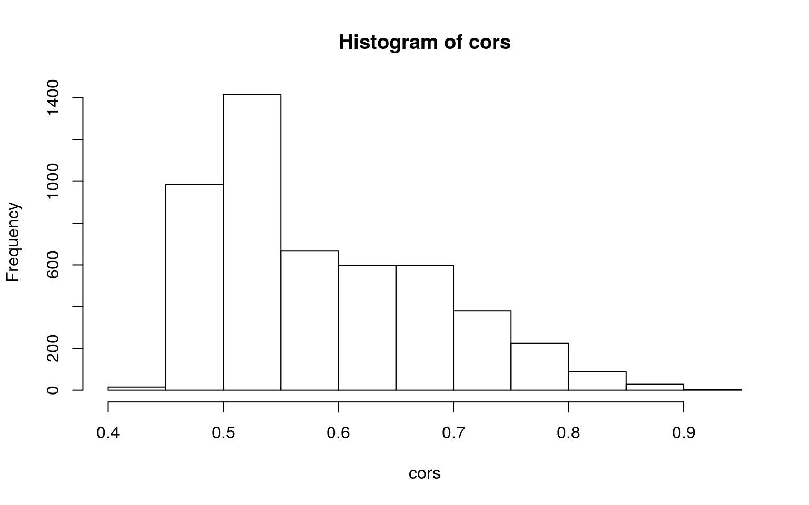
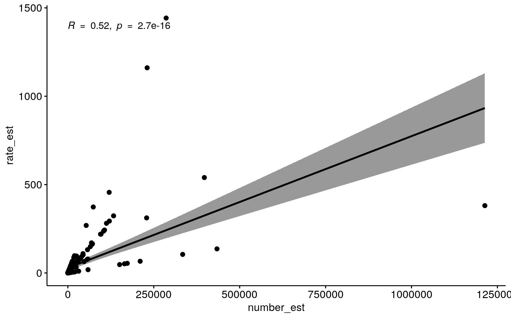
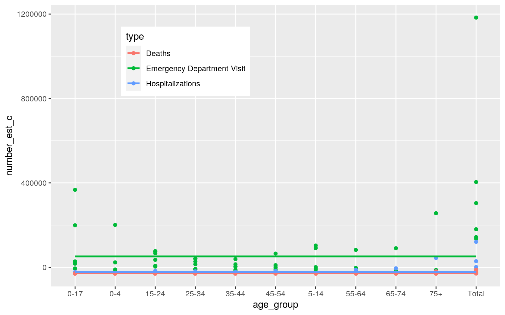
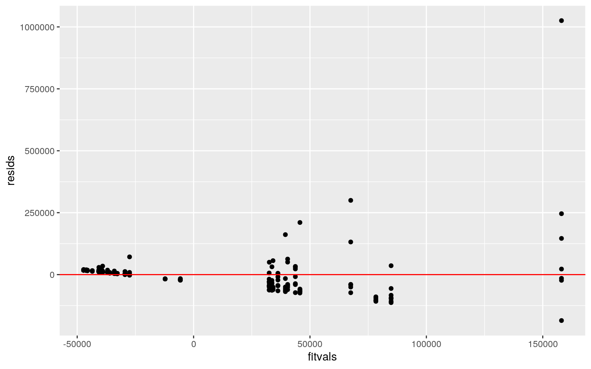
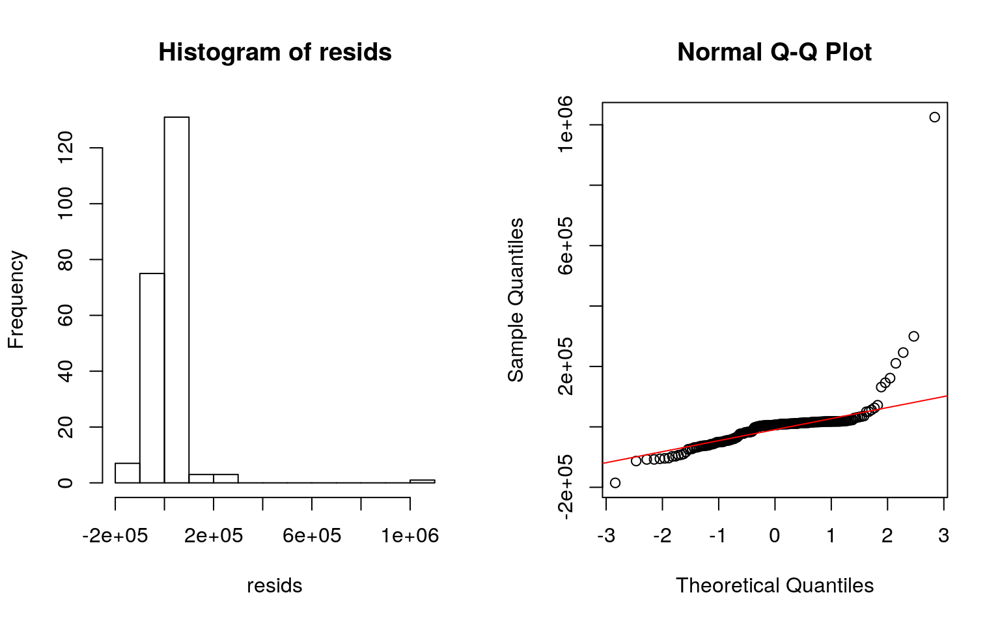
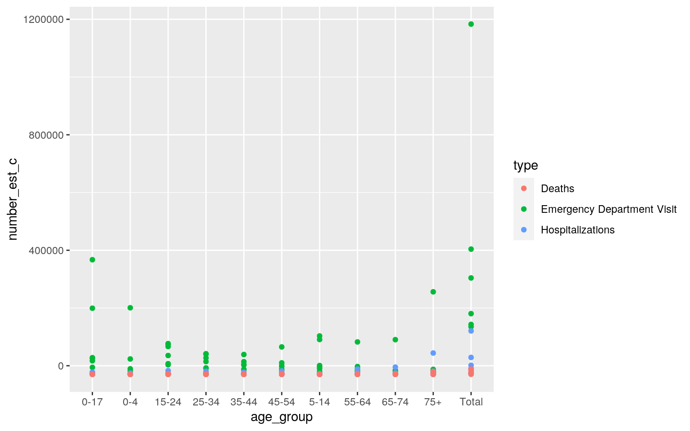
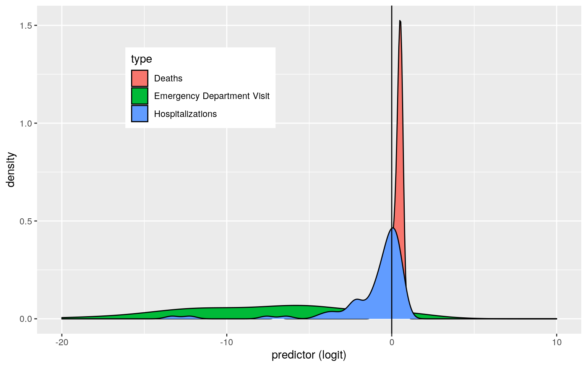
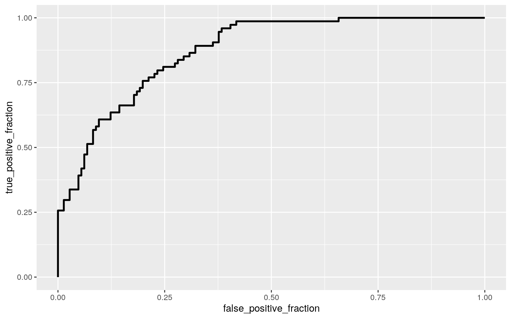
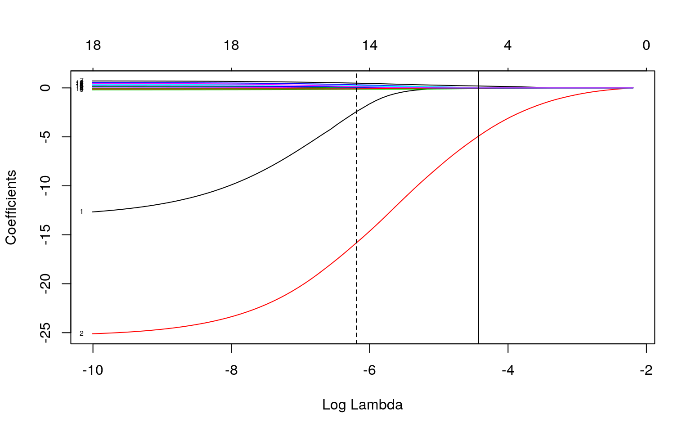

The dataset titled 'tbi_age' contains information on traumatic brain injuries with five different variables (age_group, type, injury_mechanism, number_est, and rate_est). A traumatic brain injury is caused by an external force exerted onto the head or other body parts which end up causing trauma to the brain in some way. Within this dataset, the following variables are recorded: the age group, the type of care received/occurrence whether it was an emergency visit, hospitalization, or resulted in death, how the injury occurred (example: fall, assault, self-harm, etc), the estimated observed cases in 2014, and the rate per 100,000 cases in 2014. This dataset contains 231 observations of victims of TBI ranging from ages 0 to 75+. The main variables investigated throughout this project are the type, age group, number_est, and rate_est. This dataset contains data collected from the CDC (Centers for Disease and Control and Prevention) and the Veterans Brain Injury Center. For this analysis, the NAs were omitted, and the resulting dataset is now called 'TBIdataset' and is used throughout all tests/models.
tbi_age <- readr::read_csv('https://raw.githubusercontent.com/rfordatascience/tidytuesday/master/data/2020/2020-03-24/tbi_age.csv')
glimpse(tbi_age)## Rows: 231
## Columns: 5
## $ age_group <chr> "0-17", "0-17", "0-17", "0-17",
"0-17", "0-17", "0-17", "0-4", "0-4", "0…
## $ type <chr> "Emergency Department Visit", "Emergency
Department Visit", "Emergency D…
## $ injury_mechanism <chr> "Motor Vehicle Crashes",
"Unintentional Falls", "Unintentionally struck …
## $ number_est <dbl> 47138, 397190, 229236, 55785, NA,
24360, 57983, 5464, 230776, 53436, 120…
## $ rate_est <dbl> 64.1, 539.8, 311.6, 75.8, NA, 33.1,
78.8, 27.5, 1161.0, 268.8, 60.4, NA,…TBIdataset <- na.omit(tbi_age)To begin running these tests, the assumptions need to be considered.
MANOVA assumptions include: random samples, independent observations, multivariate normality of DVs, homogeneity of within-group covariance matrices, linear relationships among DVs, no extreme univariate or multivariate outliers, no multicollinearity.
The basis of ANOVA testing is the following: ANOVA assumptions include: random samples, independent observations, normal distribution or large sample, equal variance.
## ASSUMPTIONS for MANOVA
group <- TBIdataset$type
DVs <- TBIdataset %>% select(number_est, rate_est)
#Test multivariate normality for each group (null: assumption met)
sapply(split(DVs,group), mshapiro_test)## Deaths Emergency Department Visit Hospitalizations
## statistic 0.3461021 0.3664174 0.2542204
## p.value 1.683319e-16 4.897708e-16 1.5043e-17 #If any p<.05, stop. If not, test homogeneity of covariance matrices
#Box's M test (null: assumption met)
box_m(DVs, group)## # A tibble: 1 x 4
## statistic p.value parameter method
## <dbl> <dbl> <dbl> <chr>
## 1 1155. 2.22e-246 6 Box's M-test for Homogeneity of
Covariance Matrices #View covariance matrices for each group
lapply(split(DVs, group), cov)## $Deaths
## number_est rate_est
## number_est 10515227.01 9494.59034
## rate_est 9494.59 40.54876
##
## $`Emergency Department Visit`
## number_est rate_est
## number_est 26667725056 15988973.23
## rate_est 15988973 51892.75
##
## $Hospitalizations
## number_est rate_est
## number_est 421077753.1 461141.839
## rate_est 461141.8 1999.489## MANOVA TEST
man1<-manova(cbind(number_est,rate_est)~type, data=TBIdataset)
summary(man1)## Df Pillai approx F num Df den Df Pr(>F)
## type 2 0.20182 12.177 4 434 2.164e-09 ***
## Residuals 217
## ---
## Signif. codes: 0 '***' 0.001 '**' 0.01 '*' 0.05 '.' 0.1
' ' 1## UNIVARIATE ANOVA TESTS
summary.aov(man1)## Response number_est :
## Df Sum Sq Mean Sq F value Pr(>F)
## type 2 2.8714e+11 1.4357e+11 16.185 2.807e-07 ***
## Residuals 217 1.9249e+12 8.8706e+09
## ---
## Signif. codes: 0 '***' 0.001 '**' 0.01 '*' 0.05 '.' 0.1
' ' 1
##
## Response rate_est :
## Df Sum Sq Mean Sq F value Pr(>F)
## type 2 800149 400075 22.648 1.167e-09 ***
## Residuals 217 3833308 17665
## ---
## Signif. codes: 0 '***' 0.001 '**' 0.01 '*' 0.05 '.' 0.1
' ' 1summary(aov(number_est~type, data=TBIdataset))## Df Sum Sq Mean Sq F value Pr(>F)
## type 2 2.871e+11 1.436e+11 16.18 2.81e-07 ***
## Residuals 217 1.925e+12 8.871e+09
## ---
## Signif. codes: 0 '***' 0.001 '**' 0.01 '*' 0.05 '.' 0.1
' ' 1summary(aov(rate_est~type, data=TBIdataset))## Df Sum Sq Mean Sq F value Pr(>F)
## type 2 800149 400075 22.65 1.17e-09 ***
## Residuals 217 3833308 17665
## ---
## Signif. codes: 0 '***' 0.001 '**' 0.01 '*' 0.05 '.' 0.1
' ' 1## POST-HOC TESTS
TBIdataset%>%group_by(type)%>%summarize(mean(number_est),mean(rate_est))## # A tibble: 3 x 3
## type `mean(number_est)` `mean(rate_est)`
## <chr> <dbl> <dbl>
## 1 Deaths 1560. 2.80
## 2 Emergency Department Visit 81614. 137.
## 3 Hospitalizations 8104. 15.3pairwise.t.test(TBIdataset$number_est, TBIdataset$type, p.adj = "none")##
## Pairwise comparisons using t tests with pooled SD
##
## data: TBIdataset$number_est and TBIdataset$type
##
## Deaths Emergency Department Visit
## Emergency Department Visit 6.3e-07 -
## Hospitalizations 0.67 4.3e-06
##
## P value adjustment method: nonepairwise.t.test(TBIdataset$rate_est, TBIdataset$type, p.adj = "none")##
## Pairwise comparisons using t tests with pooled SD
##
## data: TBIdataset$rate_est and TBIdataset$type
##
## Deaths Emergency Department Visit
## Emergency Department Visit 4.7e-09 -
## Hospitalizations 0.57 8.9e-08
##
## P value adjustment method: none## PROBABILITY OF AT LEAST ONE TYPE OF TYPE 1 ERROR
1-.95^9## [1] 0.3697506## ADJUSTING THE SIGNIFICANCE LEVEL (Bonferroni Correction)
0.05/9## [1] 0.005555556**A one-way MANOVA was conducted on the dataset TBIdataset by examining the effect of the type of care received/result (emergency department visit, hospitalizations, and deaths) on two dependent variables (number_est and rate_est). Before running a MANOVA test, the assumptions need to met. First, the observations in the dataset TBIdataset are random and independent observations. Furthermore, to test for multivariate normality for each group, the mshapiro_test was run. The p-value was less than 0.05 for all groups (deaths, emergency department visit, and hospitalizations) indicating normality. The rest of the assumptions (homogeneity of within-group covariance matrices) did not have to be conducted; however, the code above shows Box's M-test for homogeneity of covariance matrices with a p-value less than 0.05 as well. When examining the covariance matrices, it is concluded that there is relative homogeneity. Finally, no outliers were evident within the TBIdataset. With this in mind, all the assumptions of the observations made in the dataset TBIdataset are met and therefore MANOVA testing can be conducted. The MANOVA testing hypotheses are the following: Null Hypothesis: For both DVs (number_est, rate_est), means for each type are equal. Alternate Hypothesis: For at least one DV, at least one type mean is different. After running the MANOVA test, it was concluded that the p-value < 0.05 indicating rejection of the null hypothesis and the means for at least one type is different, Pillai trace =0.20182, pseudo F(4,434)=12.177, p < 0.0001. Since the overall MANOVA is significant (2.164e-09), univariate ANOVA testing is run to show a mean difference across the types and determine which types are different. After running the one-way ANOVAs for each variable, both are determined to be significant and for number_est and rate_est, at least one type differs. The univariate ANOVAs for number_est and rate_est were also significant, F(2,217)=16.185, p < 0.0001 and F(2,217)=22.648, p < 0.0001, respectively. Post hoc analysis was performed by using pairwise comparisons to determine which types (emergency department visit, hospitalizations, and deaths) differed in number_est and rate_est. The number of tests performed is 1 MANOVA, two ANOVA and six pairwise t tests indicating a total of 9 tests run. The probability of a type 1 error occurring with 9 tests run is 0.3698 or 36.98%, however the Bonferroni correction can account for this error. All types were found to differ significantly from each other in terms of number_est and rate_est except for the type of hospitalizations after adjusting for multiple comparisons (Bonferroni Correction is 0.05/9 (tests) = 0.0056).*
The randomization test was performed on the correlation coefficient of two numeric variables known as 'number_est' and 'rate_est' within the TBIdataset. The null hypothesis is the following: there is no linear relationship between 'number_est' and 'rate_est'. The alternate hypothesis is the following: there is a linear relationship between 'number_est' and 'rate_est'.
## RANDOMIZATION TEST ON CORRELATION COEFFICIENT
TBIdataset %>% slice(sample(1:n(), replace=T)) %>% summarize(cor(number_est,rate_est))## # A tibble: 1 x 1
## `cor(number_est, rate_est)`
## <dbl>
## 1 0.737cors <- vector()
for(i in 1:5000){
cors[i] <- TBIdataset %>% slice(sample(1:n(), replace=T)) %>%summarize(cor(number_est,rate_est)) %>% pull
}
hist(cors)
quantile(cors, c(.025, .975))## 2.5% 97.5%
## 0.4626455 0.7984176## COMPARISON (normal-theory)
cor.test(TBIdataset$number_est, TBIdataset$rate_est)##
## Pearson's product-moment correlation
##
## data: TBIdataset$number_est and TBIdataset$rate_est
## t = 8.8715, df = 218, p-value = 2.652e-16
## alternative hypothesis: true correlation is not equal to
0
## 95 percent confidence interval:
## 0.4107451 0.6060214
## sample estimates:
## cor
## 0.5150348ggscatter(TBIdataset, x = "number_est", y = "rate_est",
add = "reg.line", conf.int = TRUE,
cor.coef = TRUE, cor.method = "pearson",
xlab = "number_est", ylab = "rate_est") By using randomization testing on this correlation coefficient between number_est and rate_est within the TBIdataset, the correlation coefficient with randomization is determined to be the following: 0.5910 (this value may change due to randomization test). The 95% confidence interval is the following: lower level is 0.4620 and upper level is 0.7951. This indicates 95% confidence that the correlation coefficient lies between 0.4620 and 0.7951. A histogram is shown to demonstrate the distribution of cors (randomization test). This indicates a moderate positive or negative correlation. When running the normal-theory correlation coefficient, the value is 0.5150 indicating a moderate positive or negative correlation between number_est and rate_est. Visualization of the correlation between number_est (x-axis) and rate_est (y-axis).
In this linear regression model, the following question is investigated: What predicts number_est or estimated observed cases in 2014? In this linear regression model, the null hypotheses are the following: While controlling for age_group, type does not explain variation in the number of estimated observed cases in 2014. While controlling for type, the age_group does not explain variation in the number of estimated observed cases in 2014. The alternate hypothesis is the following: While controlling for age_group, type does explain variation in the number of estimated observed cases in 2014. While controlling for type, the age_group does explain variation in the number of estimated observed cases in 2014. In this interaction, all the numeric variables are mean centered. The assumptions for linear regression are the following (LINE conditions): linear relationship between each predictor (x) and the response (y), independent observations, random samples, normality distributed residuals, and equal variance of points/residuals along regression line (homoskedasticity).
##LINEAR REGRESSION MODEL
## Mean-centering numeric variables
TBIdataset%>%na.omit%>% mutate(y=ifelse(type=="Deaths",1,0),
number_est_c=number_est-mean(number_est),
rate_est_c=rate_est-mean(rate_est)) -> TBIdata1
## Linear regression model
fit <- lm(number_est_c ~ age_group + type, data=TBIdata1)
summary(fit)##
## Call:
## lm(formula = number_est_c ~ age_group + type, data =
TBIdata1)
##
## Residuals:
## Min 1Q Median 3Q Max
## -185435 -33661 6231 15566 1025410
##
## Coefficients:
## Estimate Std. Error t value Pr(>|t|)
## (Intercept) -12236 22641 -0.540 0.58946
## age_group0-4 -28073 29691 -0.946 0.34550
## age_group15-24 -23787 28611 -0.831 0.40672
## age_group25-34 -31279 28611 -1.093 0.27555
## age_group35-44 -35034 28611 -1.224 0.22216
## age_group45-54 -33845 28611 -1.183 0.23818
## age_group5-14 -27100 29691 -0.913 0.36244
## age_group55-64 -34984 28611 -1.223 0.22282
## age_group65-74 -33384 28942 -1.153 0.25005
## age_group75+ -21817 28942 -0.754 0.45183
## age_groupTotal 90541 28611 3.165 0.00179 **
## typeEmergency Department Visit 79736 14749 5.406
1.77e-07 ***
## typeHospitalizations 6544 14644 0.447 0.65543
## ---
## Signif. codes: 0 '***' 0.001 '**' 0.01 '*' 0.05 '.' 0.1
' ' 1
##
## Residual standard error: 89070 on 207 degrees of freedom
## Multiple R-squared: 0.2576, Adjusted R-squared: 0.2145
## F-statistic: 5.984 on 12 and 207 DF, p-value: 6.138e-09 ## Plot of the regression model
ggplot(TBIdata1, aes(x=age_group, y=number_est_c,group=type))+geom_point(aes(color=type))+
geom_smooth(method="lm",formula=y~1,se=F,fullrange=T,aes(color=type))+
theme(legend.position=c(.30,.80))+xlab("age_group")
## Assumptions for Linear Regression Model
resids<-fit$residuals
fitvals<-fit$fitted.values
ggplot()+geom_point(aes(fitvals,resids))+geom_hline(yintercept=0, color='red')
par(mfrow=c(1,2)); hist(resids); qqnorm(resids); qqline(resids, col='red')
## Assumptions (Normality) Using the Shapiro-Wilk test
## Null hypothesis: true distribution is normal
shapiro.test(resids) ## REJECT NULL - ASSUME NON-NORMALITY##
## Shapiro-Wilk normality test
##
## data: resids
## W = 0.46151, p-value < 2.2e-16 ##Assumptions (Homoskedsaticity) Using the Breusch-Pagan test
## Null hypothesis: homoskedastic
fit<-lm(number_est_c~age_group+type,data=TBIdata1)
bptest(fit) ## NULL FAILED TO BE REJECTED- ASSUME HOMOSKEDASTICITY##
## studentized Breusch-Pagan test
##
## data: fit
## BP = 17.242, df = 12, p-value = 0.1407ggplot(TBIdata1,aes(age_group,number_est_c,color=type))+geom_point() ## NO FANNING PATTERN PRESENT - ASSUME HOMOSKEDASTICITY
## Recompute regression results with robust standard errors
summary(fit)$coef[,1:2] ## uncorrected SEs## Estimate Std. Error
## (Intercept) -12236.279 22640.67
## age_group0-4 -28073.056 29691.01
## age_group15-24 -23786.619 28610.97
## age_group25-34 -31279.429 28610.97
## age_group35-44 -35033.762 28610.97
## age_group45-54 -33845.429 28610.97
## age_group5-14 -27100.278 29691.01
## age_group55-64 -34983.810 28610.97
## age_group65-74 -33383.772 28942.36
## age_group75+ -21816.672 28942.36
## age_groupTotal 90541.333 28610.97
## typeEmergency Department Visit 79736.239 14749.03
## typeHospitalizations 6543.824 14643.51coeftest(fit, vcov = vcovHC(fit))[,1:2] ## correct SEs## Estimate Std. Error
## (Intercept) -12236.279 20237.125
## age_group0-4 -28073.056 24089.773
## age_group15-24 -23786.619 21495.224
## age_group25-34 -31279.429 21484.535
## age_group35-44 -35033.762 21632.535
## age_group45-54 -33845.429 21759.544
## age_group5-14 -27100.278 22196.925
## age_group55-64 -34983.810 22071.045
## age_group65-74 -33383.772 22144.508
## age_group75+ -21816.672 25168.259
## age_groupTotal 90541.333 61073.072
## typeEmergency Department Visit 79736.239 18373.733
## typeHospitalizations 6543.824 5629.565 ## Proportion of the variation in the outcome does the model explain
summary(fit)$r.sq## [1] 0.2575506A linear regression model predicting one response variable of number_est_c from the two variables of age_group and type the following is determined: -12236 is the predicted value of number_est_c when age_group equals 0-17 and type is deaths. While holding type constant, the slope of the various age groups are shown in the code on the number of estimated observed cases. Furthermore, while holding age_group constant, 79736 is the slope for type of emergency department visit on the number of estimated observed cases. While holding age_group constant, 6544 is the slope for type of hospitalizations on the number of estimated observed cases. The assumptions of linearity, normality, and homoskedasticity were checked by examining graphically, as well as running hypothesis tests (Shapiro-Wilks test and Breusch-Pagan test) . The data fails to be linear and normal, however, homoskedasticity is assumed. Although not all the assumptions were met through this dataset, the regression results were recomputed with robust standard errors. When comparing the before and after robust SEs, it can be seen that the standard errors for all interactions decreases dramatically, with the exceptions of the interaction of number_est_c and age_groupTotal and the interaction of number_est_c and typeEmergency Department Visit. This indicates the linear regression model with robust standard errors is a better model than the previous linear regression model. The proportion of the variation in the outcome this model explains is 0.2575 or 25.75%.
The linear regression model from above was rerun, this time with bootstrapped standard errors. To do this, resampling was done. First randomly sample rows from the TBIdata1 with replacement, then calculate the coefficient estimates on the bootstrapped sample. This was repeated 5000 times in the following code. The empirical 95% confidence interval was also found.
## LINEAR REGRESSION MODEL WITH BOOTSTRAPPED STANDARD ERRORS (By Resampling)
boot_dat<- sample_frac(TBIdata1, replace=T)
samp_distn<-replicate(5000, {
boot_dat <- sample_frac(TBIdata1, replace=T)
fit2 <- lm(number_est_c~age_group+ type, data=boot_dat)
coef(fit2)
})
## ESTIMATED SEs
samp_distn %>% t %>% as.data.frame %>% summarize_all(sd)## (Intercept) age_group0-4 age_group15-24 age_group25-34
age_group35-44 age_group45-54
## 1 19943.06 23716.33 20985.21 20945.16 21066.09 21212.98
## age_group5-14 age_group55-64 age_group65-74 age_group75+
age_groupTotal
## 1 21626.06 21633.24 21650.22 25065.76 60106.43
## typeEmergency Department Visit typeHospitalizations
## 1 17678.77 6176.181## EMPIRICAL 95% CI
samp_distn %>% t %>% as.data.frame %>% pivot_longer(1:13) %>% group_by(name) %>%summarize(lower=quantile(value,.025), upper=quantile(value,.975))## # A tibble: 13 x 3
## name lower upper
## <chr> <dbl> <dbl>
## 1 (Intercept) -43817. 32806.
## 2 age_group0-4 -78878. 13786.
## 3 age_group15-24 -69759. 9819.
## 4 age_group25-34 -77878. 1790.
## 5 age_group35-44 -81154. -1557.
## 6 age_group45-54 -79301. 31.9
## 7 age_group5-14 -74047. 8479.
## 8 age_group55-64 -82706. -135.
## 9 age_group65-74 -80313. 2339.
## 10 age_group75+ -74392. 24855.
## 11 age_groupTotal -7801. 222033.
## 12 typeEmergency Department Visit 49973. 117229.
## 13 typeHospitalizations -6289. 19309.## COMPARISION
coeftest(fit) [,1:2] ## Normal-theory SEs## Estimate Std. Error
## (Intercept) -12236.279 22640.67
## age_group0-4 -28073.056 29691.01
## age_group15-24 -23786.619 28610.97
## age_group25-34 -31279.429 28610.97
## age_group35-44 -35033.762 28610.97
## age_group45-54 -33845.429 28610.97
## age_group5-14 -27100.278 29691.01
## age_group55-64 -34983.810 28610.97
## age_group65-74 -33383.772 28942.36
## age_group75+ -21816.672 28942.36
## age_groupTotal 90541.333 28610.97
## typeEmergency Department Visit 79736.239 14749.03
## typeHospitalizations 6543.824 14643.51coeftest(fit, vcov=vcovHC(fit))[,1:2] ## Robust SEs## Estimate Std. Error
## (Intercept) -12236.279 20237.125
## age_group0-4 -28073.056 24089.773
## age_group15-24 -23786.619 21495.224
## age_group25-34 -31279.429 21484.535
## age_group35-44 -35033.762 21632.535
## age_group45-54 -33845.429 21759.544
## age_group5-14 -27100.278 22196.925
## age_group55-64 -34983.810 22071.045
## age_group65-74 -33383.772 22144.508
## age_group75+ -21816.672 25168.259
## age_groupTotal 90541.333 61073.072
## typeEmergency Department Visit 79736.239 18373.733
## typeHospitalizations 6543.824 5629.565samp_distn %>% t %>% as.data.frame %>% summarize_all(sd) ## Bootstrapped SEs (resampling rows)## (Intercept) age_group0-4 age_group15-24 age_group25-34
age_group35-44 age_group45-54
## 1 19943.06 23716.33 20985.21 20945.16 21066.09 21212.98
## age_group5-14 age_group55-64 age_group65-74 age_group75+
age_groupTotal
## 1 21626.06 21633.24 21650.22 25065.76 60106.43
## typeEmergency Department Visit typeHospitalizations
## 1 17678.77 6176.181After rerunning the linear regression model with bootstrapped standard errors, it was compared to the previous linear regression model. When comparing the normal-theory SEs to the Robust SEs, there is a large decrease in standard error when using the robust SEs. Furthermore, after using bootstrapped SEs (resampling rows), there again is another decrease in standard error when compared to both previous linear regression models. Furthermore, code was run to determine empirical confidence intervals. From this, the lower and upper limits of the 95% CI. From these limits, it can be interpreted that there is 95% confidence that number_est_c falls within these lower and upper limits for each age_group. Basically, bootstrapped SEs are helpful when assumptions are violated, or a small sample size is present. From this code, it can be inferred that the bootstrapping SEs allow for a better linear regression model to be created to model the dataset 'TBIdata1'.
In this logistic regression model, a binary variable or dummy variable was created from the variable 'type' to refer to if the patient's traumatic brain injury resulted in the patient living or dying. To do this, a dummy variable was created to refer to 'deaths' as 1 and the other two types known as 'hospitalizations' and 'emergency department visits' as 0 indicating the patient lived. In this model, the 'y' binary variable was predicted from two explanatory variables of number_est and rate_est which represent the following: the estimated observed cases in 2014 and the rate per 100,000 cases in 2014. Furthermore, all numeric variables (number_est and rate_est) were centered for the logistic regression model.
## LOGISTIC REGRESSION MODEL (TWO EXPLANATORY VARIABLES)
library(interactions)
TBIdataset%>%select(number_est,rate_est,type)%>%na.omit%>%
mutate(y=ifelse(type=="Deaths",1,0),
number_est_c=number_est-mean(number_est),
rate_est_c=rate_est-mean(rate_est)) -> TBIdata1
fit3 <- glm(y~number_est_c+rate_est_c,data=TBIdata1,family='binomial')
summary(fit3)##
## Call:
## glm(formula = y ~ number_est_c + rate_est_c, family =
"binomial",
## data = TBIdata1)
##
## Deviance Residuals:
## Min 1Q Median 3Q Max
## -1.4256 -0.9067 -0.0040 0.9445 3.7105
##
## Coefficients:
## Estimate Std. Error z value Pr(>|z|)
## (Intercept) -7.533e+00 1.883e+00 -4.001 6.31e-05 ***
## number_est_c -4.303e-05 5.276e-05 -0.816 0.41466
## rate_est_c -1.345e-01 4.422e-02 -3.041 0.00236 **
## ---
## Signif. codes: 0 '***' 0.001 '**' 0.01 '*' 0.05 '.' 0.1
' ' 1
##
## (Dispersion parameter for binomial family taken to be 1)
##
## Null deviance: 280.98 on 219 degrees of freedom
## Residual deviance: 192.32 on 217 degrees of freedom
## AIC: 198.32
##
## Number of Fisher Scoring iterations: 10coeftest(fit3) ## COEFFICIENT ESTIMATES##
## z test of coefficients:
##
## Estimate Std. Error z value Pr(>|z|)
## (Intercept) -7.5328e+00 1.8827e+00 -4.0010 6.308e-05 ***
## number_est_c -4.3034e-05 5.2756e-05 -0.8157 0.414660
## rate_est_c -1.3447e-01 4.4221e-02 -3.0408 0.002359 **
## ---
## Signif. codes: 0 '***' 0.001 '**' 0.01 '*' 0.05 '.' 0.1
' ' 1exp(coef(fit3))## (Intercept) number_est_c rate_est_c
## 0.0005352456 0.9999569665 0.8741817330## CONFUSION MATRIX
prob<-predict(fit3,type="response")
pred<-ifelse(prob>.5,1,0)
table(truth=TBIdata1$y, prediction=pred)%>%addmargins## prediction
## truth 0 1 Sum
## 0 113 33 146
## 1 17 57 74
## Sum 130 90 220(113+57)/220 ## ACCURACY## [1] 0.772727357/74 ## TPR (SENSITIVITY) probability of resulting in type=deaths## [1] 0.7702703113/146 ## TNR (SPECIFICITY) probability of type= Emergency Department Visit/Hospitalization## [1] 0.773972657/90 ## PPV (PRECISION) proportion type=deaths who actually are ## [1] 0.6333333## GGPLOT DENSITY PLOT
TBIdata1$logit<-predict(fit3,type="link")
TBIdata1%>%ggplot()+geom_density(aes(logit,color=,fill=type), alpha=1)+ theme(legend.position=c(.3,.75))+geom_vline(xintercept=0)+xlab("predictor (logit)") + xlim(-20,10) 
## ROC CURVE (PLOT)
library(plotROC)
ROCplot<-ggplot(TBIdata1)+geom_roc(aes(d=y,m=prob), n.cuts=0)
ROCplot
## CALCULATE AUC
calc_auc(ROCplot)## PANEL group AUC
## 1 1 -1 0.8729174class_diag(prob, TBIdata1$y)## acc sens spec ppv f1 auc
## 1 0.7727273 0.7702703 0.7739726 0.6333333 0.695122
0.8729174After running the above code for this logistic regression model, the coefficient estimates can be interpreted as the following: (intercept): odds of resulting in a dead patient with a number_est_c=0 and rate_est_c=0 is 0.0005. (number_est_c): by controlling for rate_est_c, for every 1 unit increase in number_est_c, the odds of the patient dying increases by a factor of 0.9999. (raet_est_c): by controlling for number_est_c, for every 1 unit increase in rate_est_c, the odds of the patient dying increases by a factor of 0.8741. A confusion matrix was created to model predictions versus true outcomes. From the confusion matrix, the accuracy, sensitivity (TPR), specificity (TNR), and precision (PPV) can be calculated. The accuracy of this model is 0.7727. The sensitivity is 0.7703, which is the true positive rate, so the probability of the patient resulting in death from the TBI. The specificity is 0.7740, which is the true negative rate, so the probability of the patient living from the TBI. Finally, the precision is 0.6333, which is the proportion classified as 'deaths' who actually resulted in death from TBI. The AUC calculated from the ROCplot and also the 'class_diag' code is 0.8729 indicating this is a 'good' logistic regression model. The ROC plot shown above shows the false positive fraction on the x-axis and the true positive fraction on the y-axis. This ROC plot does not indicate the best performance for the classifiers, as the curve does not touch the very top left of the graph. Basically, from this ROC curve it can be inferred that the classifiers in this model are somewhat useful, however, the model is not the most accurate test.
In this logistic regression model, a binary variable or dummy variable was created from the variable 'type' to refer to if the patient's traumatic brain injury resulted in the patient living or dying. To do this, a dummy variable was created to refer to 'deaths' as 1 and the other two types known as 'hospitalizations' and 'emergency department visits' as 0 indicating the patient lived. In this model, the 'y' binary variable was predicted from all variables including number_est_c, rate_est_c, injury_mechanism, and age_group. Furthermore, all numeric variables (number_est and rate_est) were centered for the logistic regression model.
## LOGISTIC REGRESSION MODEL (ALL VARIABLES)
TBIdataset%>%na.omit%>%
mutate(y=ifelse(type=="Deaths",1,0),
number_est_c=number_est-mean(number_est),
rate_est_c=rate_est-mean(rate_est)) -> TBIdata1
fit4 <- glm(y~number_est_c+rate_est_c+injury_mechanism+age_group,data=TBIdata1,family='binomial')
summary(fit4)##
## Call:
## glm(formula = y ~ number_est_c + rate_est_c +
injury_mechanism +
## age_group, family = "binomial", data = TBIdata1)
##
## Deviance Residuals:
## Min 1Q Median 3Q Max
## -1.6495 -0.8378 -0.0003 0.7260 3.7752
##
## Coefficients:
## Estimate Std. Error z value
## (Intercept) -1.280e+01 2.799e+00 -4.571
## number_est_c -1.355e-04 1.074e-04 -1.262
## rate_est_c -1.740e-01 6.573e-02 -2.647
## injury_mechanismIntentional self-harm -6.667e-01
6.666e-01 -1.000
## injury_mechanismMotor Vehicle Crashes 1.532e+00
7.384e-01 2.075
## injury_mechanismOther or no mechanism specified
4.909e-01 6.551e-01 0.749
## injury_mechanismOther unintentional injury, mechanism
unspecified 4.122e-01 6.300e-01 0.654
## injury_mechanismUnintentional Falls 2.013e+00 8.157e-01
2.468
## injury_mechanismUnintentionally struck by or against an
object -2.694e-01 6.278e-01 -0.429
## age_group0-4 -1.719e-01 8.918e-01 -0.193
## age_group15-24 3.451e-01 8.632e-01 0.400
## age_group25-34 3.571e-01 8.668e-01 0.412
## age_group35-44 3.133e-01 8.609e-01 0.364
## age_group45-54 5.426e-01 8.804e-01 0.616
## age_group5-14 -3.920e-01 8.801e-01 -0.445
## age_group55-64 5.597e-01 8.798e-01 0.636
## age_group65-74 7.200e-01 9.016e-01 0.799
## age_group75+ 1.256e+00 9.578e-01 1.312
## age_groupTotal 1.674e+00 1.169e+00 1.433
## Pr(>|z|)
## (Intercept) 4.85e-06 ***
## number_est_c 0.20695
## rate_est_c 0.00813 **
## injury_mechanismIntentional self-harm 0.31719
## injury_mechanismMotor Vehicle Crashes 0.03796 *
## injury_mechanismOther or no mechanism specified 0.45365
## injury_mechanismOther unintentional injury, mechanism
unspecified 0.51297
## injury_mechanismUnintentional Falls 0.01359 *
## injury_mechanismUnintentionally struck by or against an
object 0.66790
## age_group0-4 0.84717
## age_group15-24 0.68930
## age_group25-34 0.68033
## age_group35-44 0.71591
## age_group45-54 0.53772
## age_group5-14 0.65608
## age_group55-64 0.52466
## age_group65-74 0.42452
## age_group75+ 0.18965
## age_groupTotal 0.15200
## ---
## Signif. codes: 0 '***' 0.001 '**' 0.01 '*' 0.05 '.' 0.1
' ' 1
##
## (Dispersion parameter for binomial family taken to be 1)
##
## Null deviance: 280.98 on 219 degrees of freedom
## Residual deviance: 172.95 on 201 degrees of freedom
## AIC: 210.95
##
## Number of Fisher Scoring iterations: 10coeftest(fit4) ## COEFFICIENT ESTIMATES##
## z test of coefficients:
##
## Estimate Std. Error z value
## (Intercept) -1.2797e+01 2.7993e+00 -4.5714
## number_est_c -1.3548e-04 1.0736e-04 -1.2620
## rate_est_c -1.7396e-01 6.5727e-02 -2.6468
## injury_mechanismIntentional self-harm -6.6672e-01
6.6656e-01 -1.0002
## injury_mechanismMotor Vehicle Crashes 1.5324e+00
7.3840e-01 2.0753
## injury_mechanismOther or no mechanism specified
4.9087e-01 6.5507e-01 0.7493
## injury_mechanismOther unintentional injury, mechanism
unspecified 4.1216e-01 6.3000e-01 0.6542
## injury_mechanismUnintentional Falls 2.0131e+00
8.1566e-01 2.4680
## injury_mechanismUnintentionally struck by or against an
object -2.6936e-01 6.2784e-01 -0.4290
## age_group0-4 -1.7188e-01 8.9179e-01 -0.1927
## age_group15-24 3.4511e-01 8.6320e-01 0.3998
## age_group25-34 3.5714e-01 8.6682e-01 0.4120
## age_group35-44 3.1332e-01 8.6094e-01 0.3639
## age_group45-54 5.4255e-01 8.8039e-01 0.6163
## age_group5-14 -3.9195e-01 8.8015e-01 -0.4453
## age_group55-64 5.5968e-01 8.7975e-01 0.6362
## age_group65-74 7.1999e-01 9.0157e-01 0.7986
## age_group75+ 1.2562e+00 9.5777e-01 1.3116
## age_groupTotal 1.6739e+00 1.1685e+00 1.4325
## Pr(>|z|)
## (Intercept) 4.846e-06 ***
## number_est_c 0.206946
## rate_est_c 0.008127 **
## injury_mechanismIntentional self-harm 0.317195
## injury_mechanismMotor Vehicle Crashes 0.037960 *
## injury_mechanismOther or no mechanism specified 0.453652
## injury_mechanismOther unintentional injury, mechanism
unspecified 0.512971
## injury_mechanismUnintentional Falls 0.013587 *
## injury_mechanismUnintentionally struck by or against an
object 0.667901
## age_group0-4 0.847165
## age_group15-24 0.689301
## age_group25-34 0.680329
## age_group35-44 0.715915
## age_group45-54 0.537724
## age_group5-14 0.656082
## age_group55-64 0.524657
## age_group65-74 0.424521
## age_group75+ 0.189651
## age_groupTotal 0.151996
## ---
## Signif. codes: 0 '***' 0.001 '**' 0.01 '*' 0.05 '.' 0.1
' ' 1exp(coef(fit4))## (Intercept)
## 2.770337e-06
## number_est_c
## 9.998645e-01
## rate_est_c
## 8.403269e-01
## injury_mechanismIntentional self-harm
## 5.133877e-01
## injury_mechanismMotor Vehicle Crashes
## 4.629239e+00
## injury_mechanismOther or no mechanism specified
## 1.633742e+00
## injury_mechanismOther unintentional injury, mechanism
unspecified
## 1.510078e+00
## injury_mechanismUnintentional Falls
## 7.486125e+00
## injury_mechanismUnintentionally struck by or against an
object
## 7.638660e-01
## age_group0-4
## 8.420801e-01
## age_group15-24
## 1.412148e+00
## age_group25-34
## 1.429241e+00
## age_group35-44
## 1.367953e+00
## age_group45-54
## 1.720389e+00
## age_group5-14
## 6.757349e-01
## age_group55-64
## 1.750117e+00
## age_group65-74
## 2.054420e+00
## age_group75+
## 3.512113e+00
## age_groupTotal
## 5.333042e+00## CONFUSION MATRIX
prob<-predict(fit4,type="response")
pred<-ifelse(prob>.5,1,0)
table(truth=TBIdata1$y, prediction=pred)%>%addmargins## prediction
## truth 0 1 Sum
## 0 132 14 146
## 1 17 57 74
## Sum 149 71 220class_diag(prob, TBIdata1$y)## acc sens spec ppv f1 auc
## 1 0.8590909 0.7702703 0.9041096 0.8028169 0.7862069
0.9082747## 10-fold CV
set.seed(1234)
k=10
data <- TBIdata1 %>% sample_frac
folds <- ntile(1:nrow(data),n=10)
diags<-NULL
for(i in 1:k){
train <- data[folds!=i,]
test <- data[folds==i,]
truth <- test$y
fit5 <- glm(y~number_est_c+rate_est_c+injury_mechanism+age_group, data=train, family="binomial")
probs <- predict(fit4, newdata=test, type="response")
diags<-rbind(diags,class_diag(probs,truth))
}
summarize_all(diags,mean)## acc sens spec ppv f1 auc
## 1 0.8590909 0.7804329 0.9109127 0.7942857 0.7743654
0.9084135## LASSO
y<-as.matrix(TBIdata1$y) #grab response
x<-model.matrix(y~number_est_c+rate_est_c+injury_mechanism+age_group,data=TBIdata1)[,-1]
x<-scale(x)
head(x)## number_est_c rate_est_c injury_mechanismIntentional
self-harm
## 1 0.17091564 0.09024933 -0.3325749
## 2 3.65394158 3.36066245 -0.3325749
## 3 1.98279518 1.79179914 -0.3325749
## 4 0.25695350 0.17068623 -0.3325749
## 5 -0.05572602 -0.12287408 -0.3325749
## 6 0.27882365 0.19131107 -0.3325749
## injury_mechanismMotor Vehicle Crashes
injury_mechanismOther or no mechanism specified
## 1 2.3750598 -0.4191282
## 2 -0.4191282 -0.4191282
## 3 -0.4191282 -0.4191282
## 4 -0.4191282 -0.4191282
## 5 -0.4191282 -0.4191282
## 6 -0.4191282 2.3750598
## injury_mechanismOther unintentional injury, mechanism
unspecified
## 1 -0.4191282
## 2 -0.4191282
## 3 -0.4191282
## 4 2.3750598
## 5 -0.4191282
## 6 -0.4191282
## injury_mechanismUnintentional Falls
## 1 -0.4191282
## 2 2.3750598
## 3 -0.4191282
## 4 -0.4191282
## 5 -0.4191282
## 6 -0.4191282
## injury_mechanismUnintentionally struck by or against an
object age_group0-4 age_group15-24
## 1 -0.4191282 -0.2978319 -0.324111
## 2 -0.4191282 -0.2978319 -0.324111
## 3 2.3750598 -0.2978319 -0.324111
## 4 -0.4191282 -0.2978319 -0.324111
## 5 -0.4191282 -0.2978319 -0.324111
## 6 -0.4191282 -0.2978319 -0.324111
## age_group25-34 age_group35-44 age_group45-54
age_group5-14 age_group55-64 age_group65-74
## 1 -0.324111 -0.324111 -0.324111 -0.2978319 -0.324111
-0.3155082
## 2 -0.324111 -0.324111 -0.324111 -0.2978319 -0.324111
-0.3155082
## 3 -0.324111 -0.324111 -0.324111 -0.2978319 -0.324111
-0.3155082
## 4 -0.324111 -0.324111 -0.324111 -0.2978319 -0.324111
-0.3155082
## 5 -0.324111 -0.324111 -0.324111 -0.2978319 -0.324111
-0.3155082
## 6 -0.324111 -0.324111 -0.324111 -0.2978319 -0.324111
-0.3155082
## age_group75+ age_groupTotal
## 1 -0.3155082 -0.324111
## 2 -0.3155082 -0.324111
## 3 -0.3155082 -0.324111
## 4 -0.3155082 -0.324111
## 5 -0.3155082 -0.324111
## 6 -0.3155082 -0.324111glm(y~x,family=binomial)##
## Call: glm(formula = y ~ x, family = binomial)
##
## Coefficients:
## (Intercept)
## -11.74089
## xnumber_est_c
## -13.61635
## xrate_est_c
## -25.30408
## xinjury_mechanismIntentional self-harm
## -0.20047
## xinjury_mechanismMotor Vehicle Crashes
## 0.54842
## xinjury_mechanismOther or no mechanism specified
## 0.17568
## xinjury_mechanismOther unintentional injury, mechanism
unspecified
## 0.14751
## xinjury_mechanismUnintentional Falls
## 0.72044
## xinjury_mechanismUnintentionally struck by or against an
object
## -0.09640
## xage_group0-4
## -0.04722
## xage_group15-24
## 0.10164
## xage_group25-34
## 0.10518
## xage_group35-44
## 0.09228
## xage_group45-54
## 0.15979
## xage_group5-14
## -0.10767
## xage_group55-64
## 0.16483
## xage_group65-74
## 0.20746
## xage_group75+
## 0.36196
## xage_groupTotal
## 0.49299
##
## Degrees of Freedom: 219 Total (i.e. Null); 201 Residual
## Null Deviance: 281
## Residual Deviance: 172.9 AIC: 210.9cv <- cv.glmnet(x,y, family="binomial")
{plot(cv$glmnet.fit, "lambda", label=TRUE); abline(v = log(cv$lambda.1se)); abline(v = log(cv$lambda.min),lty=2)}
cv<-cv.glmnet(x,y,family="binomial")
lasso<-glmnet(x,y,family="binomial",lambda=cv$lambda.1se)
coef(lasso)## 19 x 1 sparse Matrix of class "dgCMatrix"
## s0
## (Intercept) -1.09933875
## number_est_c -0.05918587
## rate_est_c -2.34549761
## injury_mechanismIntentional self-harm .
## injury_mechanismMotor Vehicle Crashes .
## injury_mechanismOther or no mechanism specified .
## injury_mechanismOther unintentional injury, mechanism
unspecified .
## injury_mechanismUnintentional Falls 0.10177977
## injury_mechanismUnintentionally struck by or against an
object .
## age_group0-4 .
## age_group15-24 .
## age_group25-34 .
## age_group35-44 .
## age_group45-54 .
## age_group5-14 .
## age_group55-64 .
## age_group65-74 .
## age_group75+ .
## age_groupTotal .## 10-fold CV USING ONLY THE VARIABLES LASSO SELECTED
set.seed(1234)
k=10
data <- TBIdata1 %>% sample_frac
folds <- ntile(1:nrow(data),n=10)
diags<-NULL
for(i in 1:k){
train <- data[folds!=i,]
test <- data[folds==i,]
truth <- test$y
fit6 <- glm(y~number_est_c+rate_est_c+injury_mechanism+age_group,data=train, family="binomial")
probs <- predict(fit4, newdata=test, type="response")
diags<-rbind(diags,class_diag(probs,truth))
}
diags%>%summarize_all(mean)## acc sens spec ppv f1 auc
## 1 0.8590909 0.7804329 0.9109127 0.7942857 0.7743654
0.9084135After running the above code for this logistic regression model, the in-sample classification diagnostics were calculated (Accuracy, Sensitivity, Specificity, Precision, AUC). The accuracy of this model is 0.8591. The sensitivity is 0.7703, which is the true positive rate, so the probability of the patient resulting in death from the TBI. The specificity is 0.9041, which is the true negative rate, so the probability of the patient living from the TBI. Finally, the precision is 0.8028, which is the proportion classified as 'deaths' who actually resulted in death from TBI. Furthermore, the AUC resulting from this logistic regression model (of all variables) is 0.9083 indicating a 'great' logistic regression model (better than the previous model). It can be inferred that by using all variables to predict whether the patient lives or dies from the traumatic brain injury is more accurate than just using the two explanatory variables from before. Furthermore, a 10-fold (or repeated random sub-sampling) CV was performed on this model. Here are the following results of the classification diagnostics: The accuracy of this model is 0.8591. The sensitivity is 0.7804, which is the true positive rate, so the probability of the patient resulting in death from the TBI. The specificity is 0.9109, which is the true negative rate, so the probability of the patient living from the TBI. Finally, the precision is 0.7744, which is the proportion classified as 'deaths' who actually resulted in death from TBI. Furthermore, the AUC resulting from this logistic regression model with CV is 0.9084 indicating a 'great' logistic regression model. When comparing the 10-fold CV model with the previous in-sample metrics, a difference in sensitivity, specificity, and precision is seen. Furthermore, the AUC from the 10-fold CV model is a tad bit higher than the AUC of the previous model, indicating a more accurate model. Next, LASSO was performed on the same model/variables. The variables retained aftering performing LASSO are number_est_c, rate_est_c, and injury_mechanismUnintensionalFalls. It can now be inferred that these variables (number_est_c, rate_est_c, and injury_mechanismUnintensionalFalls) are the most predictive variables for this model. Finally, a 10-fold (or repeated random sub-sampling) CV was performed using only the variables selected from LASSO. Here are the following results of the classification diagnostics: The accuracy of this model is 0.8591. The sensitivity is 0.7804, which is the true positive rate, so the probability of the patient resulting in death from the TBI. The specificity is 0.9109, which is the true negative rate, so the probability of the patient living from the TBI. Finally, the precision is 0.7943, which is the proportion classified as 'deaths' who actually resulted in death from TBI. Furthermore, the AUC resulting from this logistic regression model with CV is 0.9084 indicating a 'great' logistic regression model. When comparing this model to the above logistic regression models, this model appears to be a better model than the first logistic regression model (without CV) and is very similar to the logistic regression model (with CV). In conclusion, using 10-fold repeated sub-sampling results in the most accurate logistic regression models and can be seen when comparing all three of these models. Using all variables (and narrowing down to the most effective ones using LASSO) can resulting in the best (and most accurate) logistic regression model for this dataset.